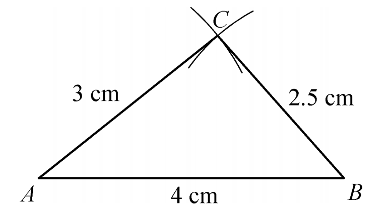
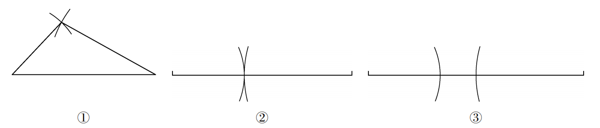

小明想用一根木条钉一个三角形支架，他找到了两根长度分别为40cm和60cm的木条，那么第三根木条应该取多长呢？这个问题与三角形的三边关系有关。今天我们就来探索三角形的边满足什么条件才能构成三角形。
作一个三角形，使它的三条边长分别为 $4\,\text{cm}$，$3\,\text{cm}$，$2.5\,\text{cm}$。
步骤：先作线段 $AB = 4\,\text{cm}$，然后以 $A$ 为圆心、$3\,\text{cm}$ 为半径画弧，以 $B$ 为圆心、$2.5\,\text{cm}$ 为半径画弧，两弧交于点 $C$，连接 $AC$、$BC$，则 $\triangle ABC$ 即为所求。

现有12条线段：三条长 $2\,\text{cm}$，三条长 $3\,\text{cm}$，两条长 $4\,\text{cm}$，两条长 $5\,\text{cm}$，两条长 $6\,\text{cm}$。任意选择三条线段作三角形，你能发现什么？
并不是任意三条线段都能组成三角形。如果两条较短线段的和不大于第三条线段，就不能组成三角形。
三角形的任意两边之和大于第三边。
如图8.1.17，为什么有些三条线段不能构成三角形？

当两条较短线段的和小于或等于第三条线段时，无法首尾相连构成三角形。
三角形的稳定性： 如果三角形的三条边固定，那么三角形的形状和大小就完全确定了。四边形不具有稳定性。
如图8.1.18，大桥的拉索、钢架桥、起重机等都利用了三角形的稳定性。
1. （口答） 下列长度的各组线段能否组成一个三角形？
(1) $15\,\text{cm}$，$10\,\text{cm}$，$7\,\text{cm}$； (2) $4\,\text{cm}$，$5\,\text{cm}$，$10\,\text{cm}$； (3) $3\,\text{cm}$，$8\,\text{cm}$，$5\,\text{cm}$； (4) $4\,\text{cm}$，$5\,\text{cm}$，$6\,\text{cm}$。
(1)能，10+7>15； (2)不能，4+5<10； (3)不能，3+5=8； (4)能，4+5>6。
2. 一木工有两根长分别为 $40\,\text{cm}$ 和 $60\,\text{cm}$ 的木条，要另找一根木条，钉成一个三角木架。问：第三根木条的长度应在什么范围内？
根据三角形三边关系，第三边应满足 $60-40 < x < 60+40$，即 $20 < x < 100$（单位：cm）。
3. 举两个三角形的稳定性在实际生活中应用的例子。
例如：自行车的车架、起重机的吊臂、屋顶的桁架等。
三角形是最稳定的几何图形，这一性质早在古代就被人们应用于建筑中。埃及金字塔、古罗马的桥梁都巧妙地利用了三角形结构。现代建筑中，钢架结构、高压电线塔也离不开三角形。
分类讨论： 判断三条线段能否构成三角形时，只需检查两条较短的边之和是否大于最长边。
数形结合： 通过作图直观感受三边关系。
应用意识： 将数学原理应用于实际生活。
✨ 三角形三边关系，稳中求变 ✨